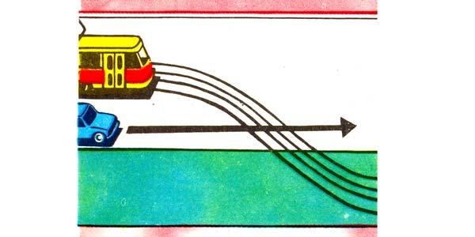
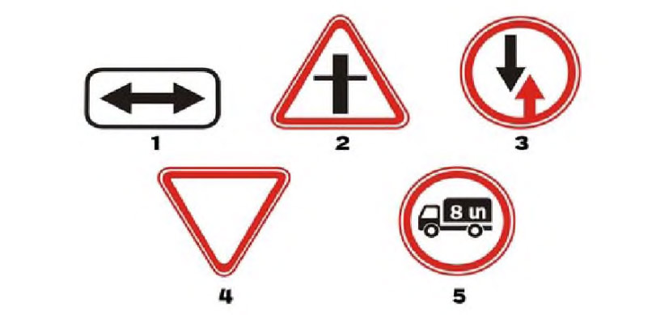
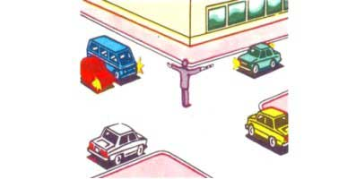
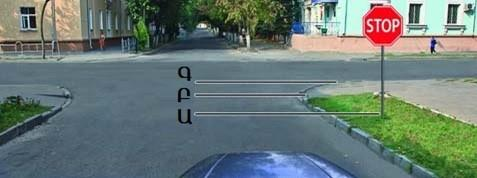
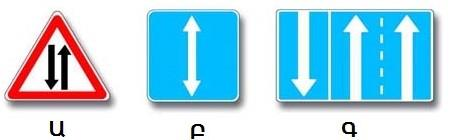
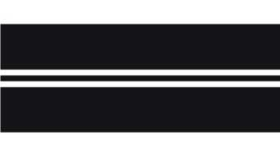
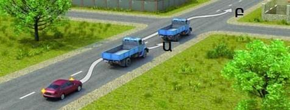
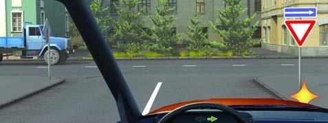
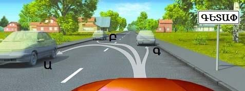

Թեստ 35
30:00
1. «Ճանապարհային երթևեկության անվտանգության ապահովման մասին» ՀՀ օրենքի համաձայն` օրվա մութ ժամանակ է համարվում`
2. Հետադարձ է համարվում
3. Տրանսպորտային միջոցների շահագործումն արգելվում է, եթե`
4. Տրանսպորտային միջոցների շահագործումն արգելվում է, եթե
5. Ո՞ր տրանսպորտային միջոցի վարորդը պետք է զիջի ճանապարհը:

6. Ո՞ր նշանն է պարտադրում զիջել ճանապարհը հատվող ճանապարհով երթևեկող տրանսպորտային միջոցներին:

7. Խաչմերուկը երկրորդը կանցնի`

8. Կարգավորողի այս ազդանշանը նշանակում է, որ երթևեկությունը թույլատրվում է`

9. Ձախ շրջադարձը թույլատրվում է
10. Որտե՞ղ է անհրաժեշտ կանգ առնել նշանի պահանջը կատարելիս

11. Նշաններից ո՞րն է նախազգուշացնում հանդիպակաց երթևեկությամբ ճանապարհի սկզբին մոտենալու մասին

12. Քանի՞ գոտի ունի ճանապարհը, որտեղ հանդիպակաց ուղղությունների տրանսպորտային հոսքերը բաժանվում են կրկնակի հոծ գծերով:

13. Թույլատրվու՞մ է արդյոք միջքաղաքային ավտոբուսի վարորդին բնակավայրերից դուրս գերազանցել 70 կմ/ժ արագություն:
14. Մանևրը կատարելուց առաջ նախազգուշացնող ազդանշանը պետք է տրվի`
15. Ո՞ր հետագծով է թույլատրվում վազանց կատարել

16. Ձայնային ազդանշանների կրկնողությամբ ընդհանուր տագնապի ինչպիսի՞ ազդանշան է ավտոբուսի վարորդը պարտավոր տալ երկաթուղային գծանցի վրա հարկադրական կանգառ կատարելու դեպքում:
17. Այս իրավիճակում ե՞րբ է թույլատրվում աջ շրջադարձը կատարել

18. Ձախ շրջադարձ կատարելիս
19. Նշվածներից ո՞ր դեպքում է թույլատրված կանգառը
